Lives :
Items :
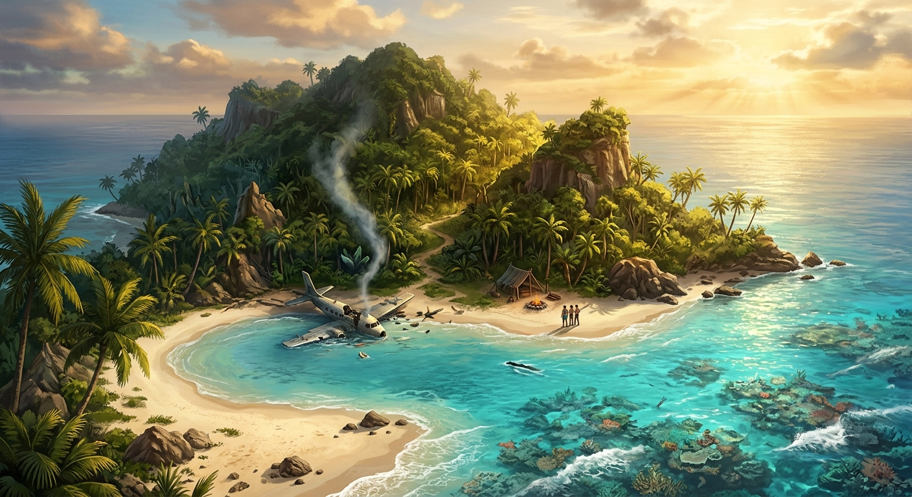
Survivor
Welcome to the game of Survivor!
In this game, you will be faced with a series of challenges and decisions that will test your survival skills. You will need to think carefully about each choice you make, as they will determine your fate on the desert island.
Read carefully. It explains the situation you are in. Your aim is to get away from the desert island safely. You will face lots of problems and dangers.
At every stage, with every decision, you must think carefully if you want to survive. It won't be easy! Good luck.
To play, simply click on the options provided at each stage of the game. Your decisions will lead you through various scenarios, and you will need to adapt to the challenges that arise.
Remember, your goal is to survive and find a way off the island. Good luck!
Play game
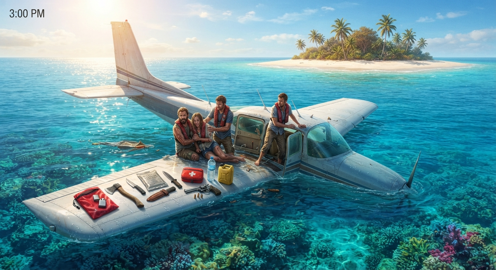
Your plane has just crashed on a coral reef 500m from a small desert island in the Pacific Ocean. It is 3:00pm in the afternoon. There are only three of you who have survived the crash.
The plane is slowly sinking under the water and you must has a lighter, and a small waterproff moneybag to put it in. On the plane you find the following useful items:
You can take three with you to the island. You have five minutes to decide which three items you will take. Think carefully! Write the ones you decide to take here:
Click a object to remove it !
Now you must swim to the shore of the island.
Good luck!
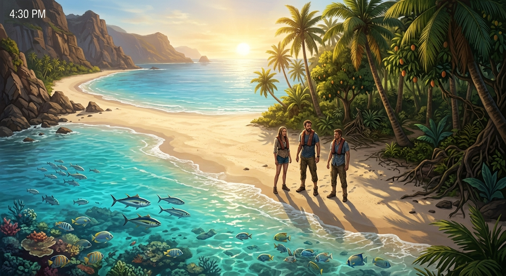
You have just arrrived on a beach on the island. All of you survived the swim, but you are very tired, hungry and thirsty. It is 4:30pm. It will be dark in 1/2 hours.
You have three choices:
What do you have with you? What is most important to you now?
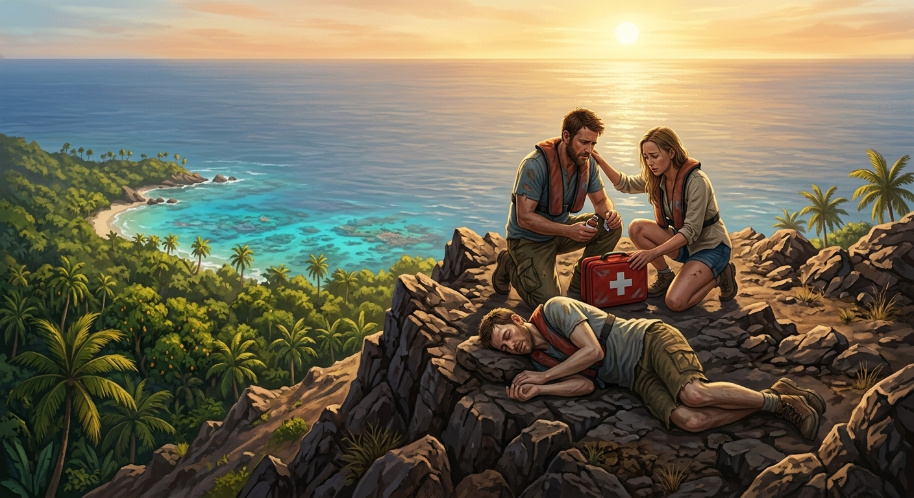
You stay together at the top of the hills for two hours. Unfortunately, no ships or planes are seen. What's more, there's no food or water up there.
Unnoticed, one of you falls asleep with dehydration and rapidly drops into a fever. Do you have the first aid kit?
No. You lose one team member.
Yes. You find some aspirin and antibiotics. S/he survies.
You must now climb down the hill, but which way?
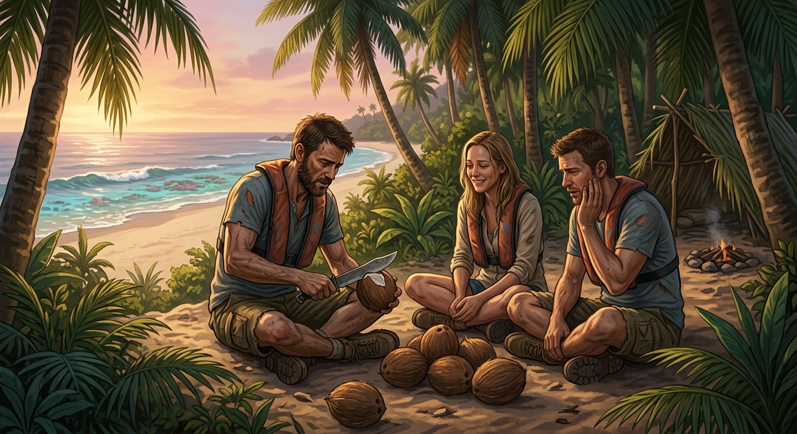
You have spent the last hour looking for hood and you have found seven very hard coconuts, but no mangos.
Yes. You can open and eat the coconuts. You feel stronger. Now what do you do?
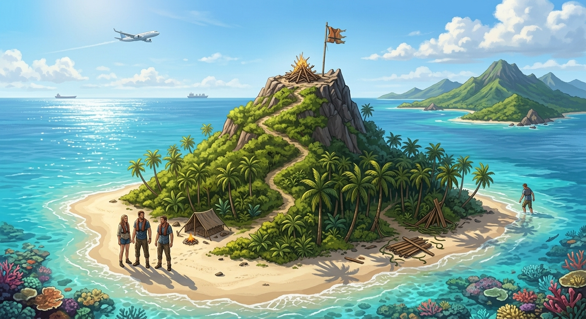
The next day is warm and sunny. You must now decide what to do. You won't survive for long on the island, so you need to be rescued within the next couple of days. You have seen one or two ships on the distant horizon already, and 20 minutes ago, a plane flew by, about five miles to the south. There is also another, larger island to the north, about three kilometres away. There is a hill in the centre of the island about 200 metres high. What would you like to do?
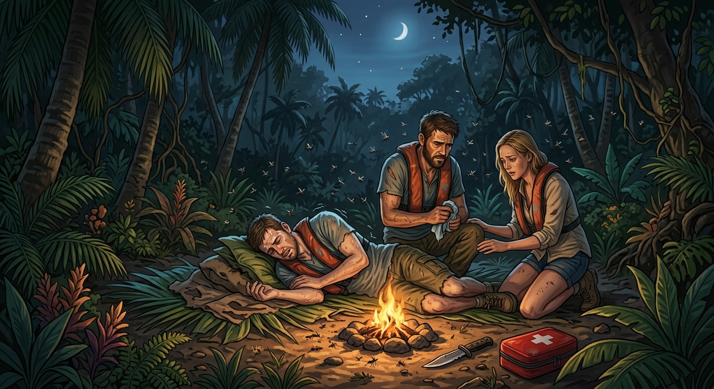
There are a lot of mosquitoes and biting insects among the trees. In the middle of the night, you all wake up. One of you has a very serious fever. Is it malaria, or dehydration? You don't know. What do you do? Think carefully about what you have with you.
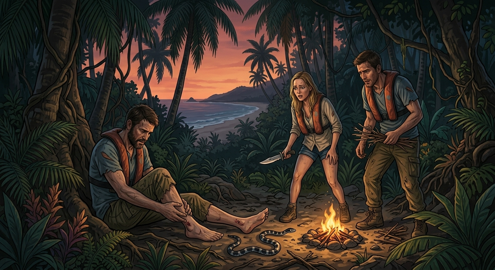
As you keep searching for food among the trees it begins to get dark.
Suddenly, one of you steps on a poisonous snake and is bitten. You lose one team member! How many of you are left? Fortunately, the snake also dies, and you manage to eat it and feel a bit better.
You decide to head back to the beach to sleep.
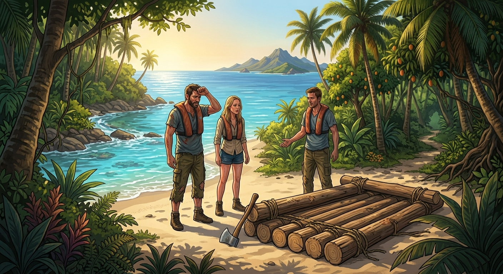
Using the axe, you make a good raft. It takes about two hours, but at the end you are happy with your work. Now you are both hungry and thirsty? What would you like to do?
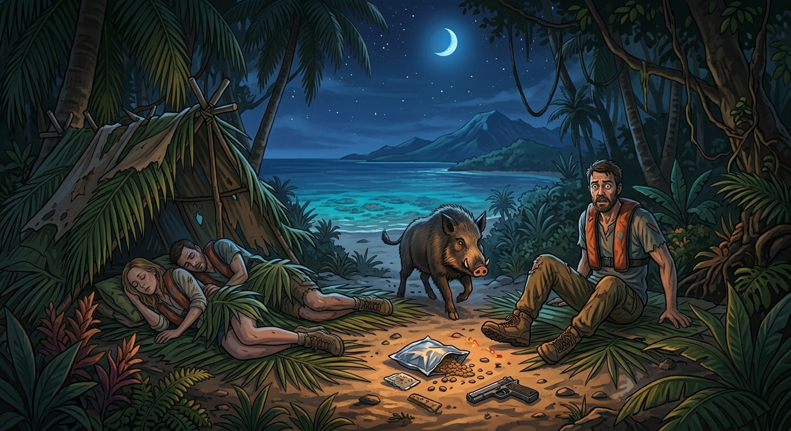
Half way through the night, your guard falls asleep. Ten minutes later, s/he wakes up and notices a forest pig in the camp. If you had any food, the pig has eaten it. Cross it off your list.
The pig runs away. Fortunately, the rest of the night passes without any problems.
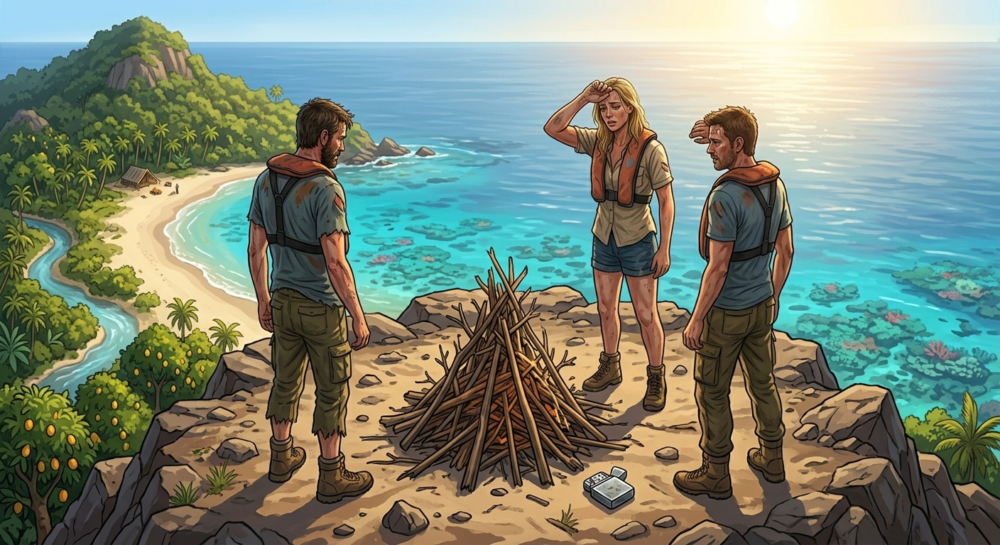
The climb to the top of the hill is long and difficult. Eventually you arrive, clear a space and manage to break off enough tree branches to prepare a good bonfire. It takes you over four hours and at the end you are very tired, hungry and extremely thirsty. What do you do now?
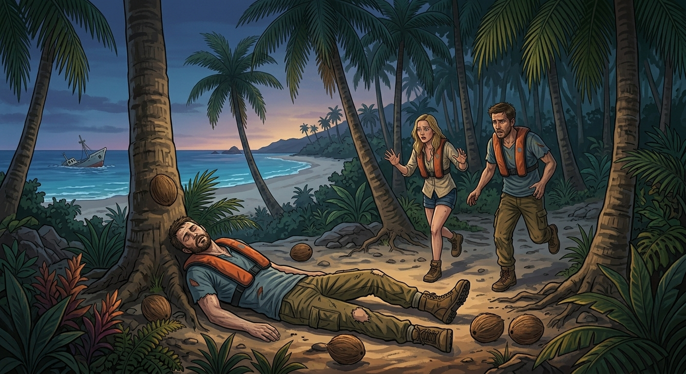
You each choose different trees to sleep in and fall asleep. Just before dawn, one member of your team falls from a high coconut tree! The coconuts fall on top of him/her. You lose one team member, but you have a lot of coconuts for breakfast!
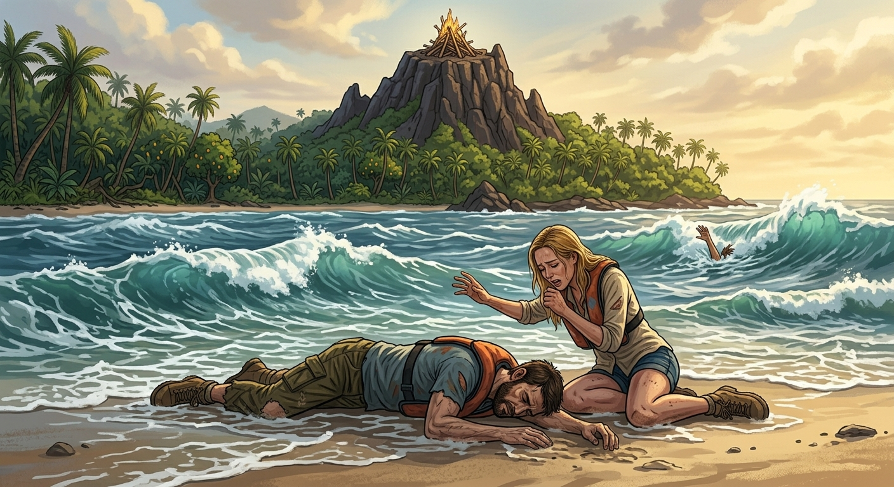
Swim for it! You set off from the beach, swimming slowly together.
After about one kilometre, the sea gets quite rough and one of you gets into difficulty. You try to help, but it's no good. You lose one team member. How many of you are left? You decide to head back to shore. You arrive on the beach exhausted and must now decide what to do:
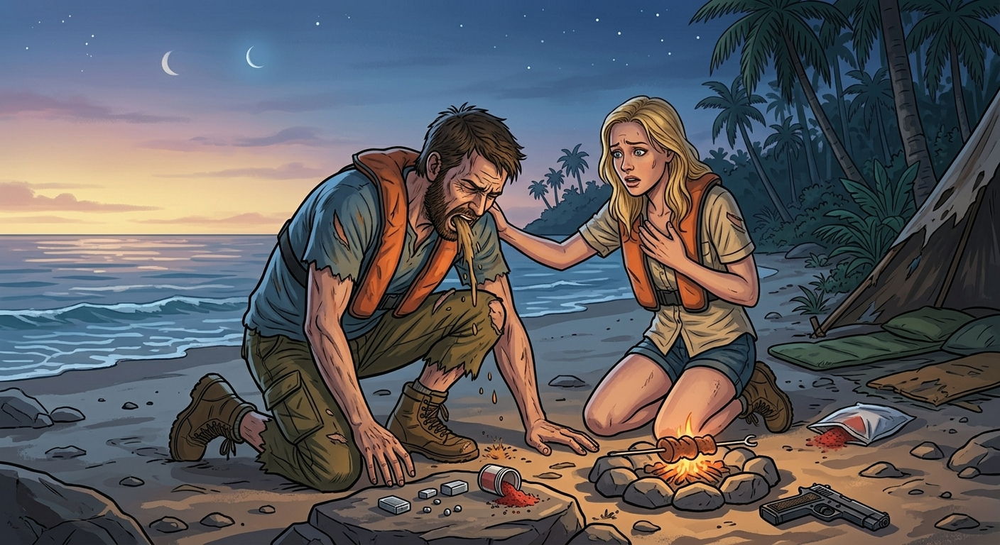
You shoot three bullets. It falls dead. You cook and eat it, having a really good meal. You feel much better afterwards. Then suddenly, somebody starts to vomit. It's lead poisoning, from the bullets. You lose one team member. How many of you are left?
(Cross the gun off your list)
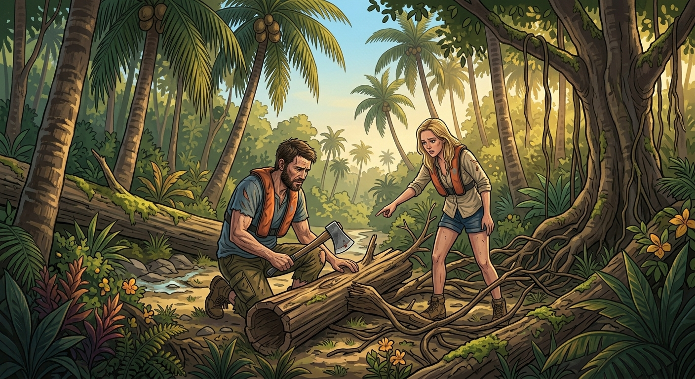
You go into the forest to find some wood to make a raft. Have you got an axe?
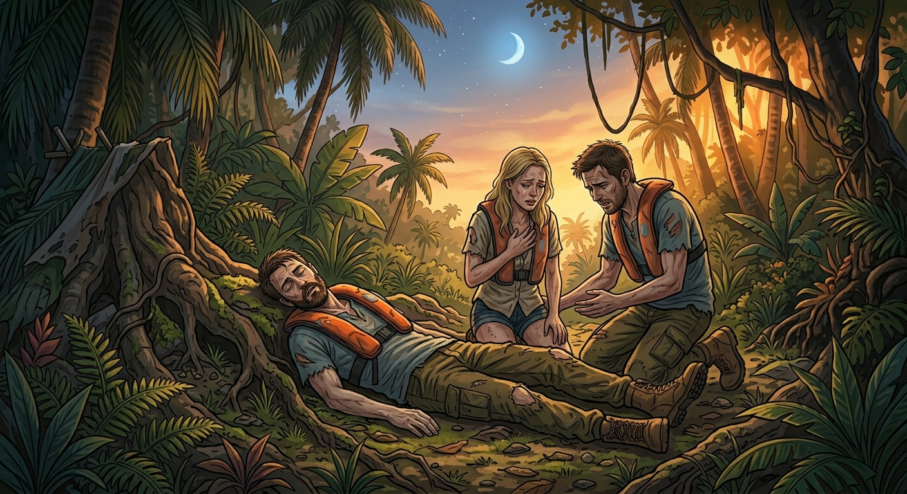
You leave the fish and spend the next hour walking through the forest looking for food. Suddenly, one of you falls down, unconscious. Is it exhaustion or hunger? You don't know. Unfortunately, you are too weak to try to heal him/her, and you don't have any medicine with you that will help, so you lose one team member. How many of you are left?
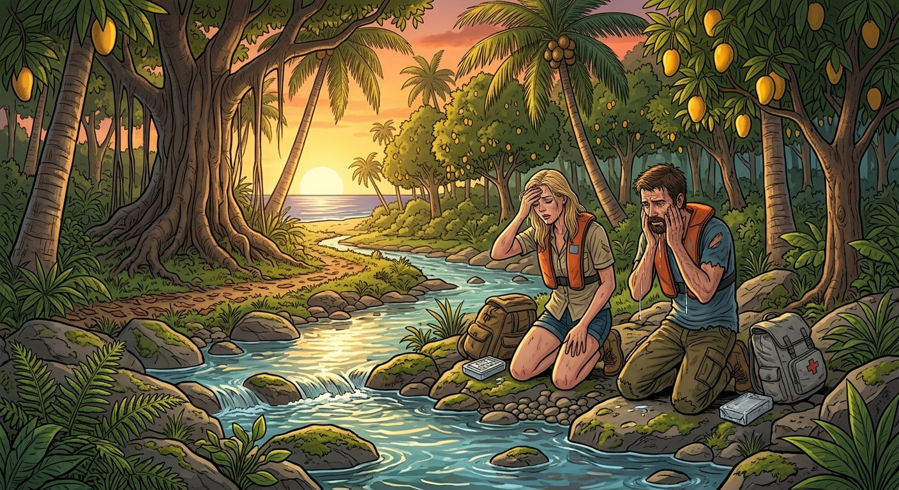
After 30 minutes walking, you have found a small stream will fresh water. You drink it and feel refreshed. But now you're very hungry, and tired.
What wold you like to do?
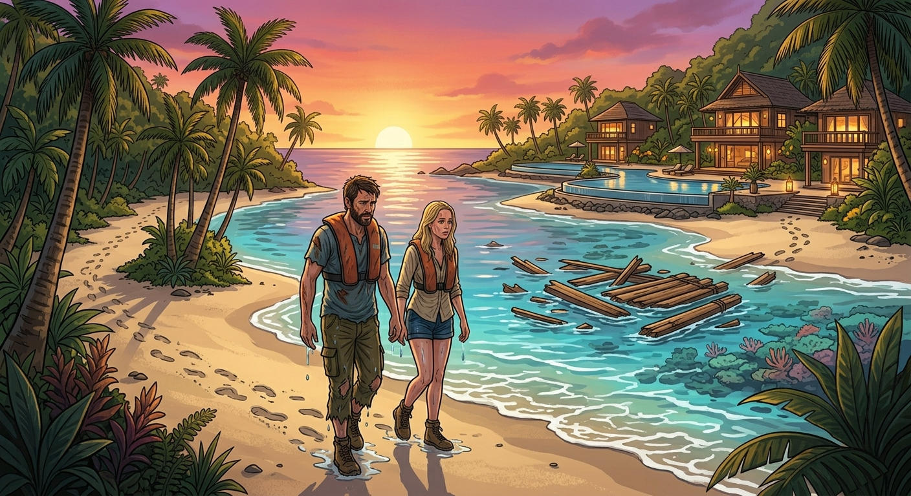
The crossing to the nearby island is lon and dangerous. Half way, your boat begins to break up, and you have to swim the rest of the way, using the pieces of wood to help you. Along the way, one of you gets into trouble and disapears beneath the water. How many of you are left?
You make it to the island, and as you come ashore, extremly tired, you notice footprints. You follow then arround the island for 30 minutes, and then... amazinggly you see a hotel. It's an exclusive island holiday resort.
You've survived.Congratulations! Sail for island !
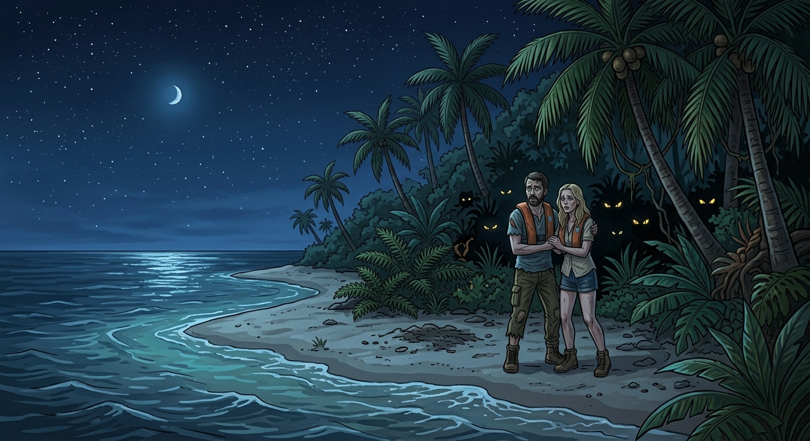
You arrive at the beach but it is completely dark. You hear strange noises coming from the bushes. Where and how would you like to sleep?
What do you have with you? What could happen in the night?
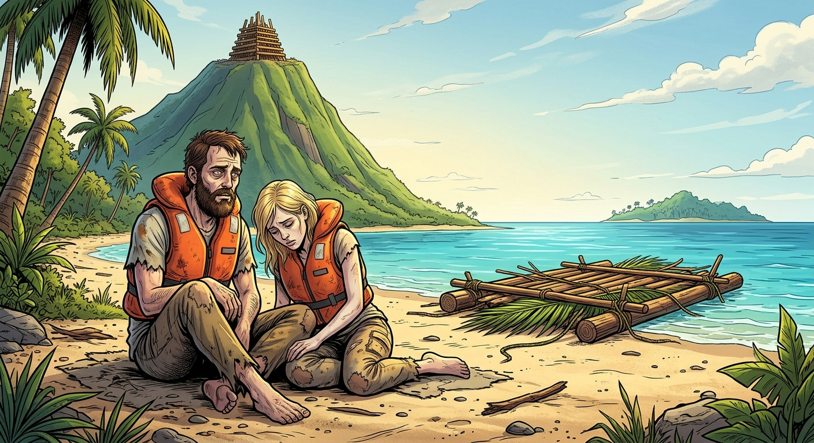
You now have the biggest problem to solve. You are feeling very weak and tired, but you really need to keep looking for a way to get off the island.
You decide to stay together for safety.
You know that you will have a better chance of seeing ships or planes from the top of the hill, but there is no food or water up there. What do you do?
If you have a raft:
If you have prepared a bonfire at the top of the hill:
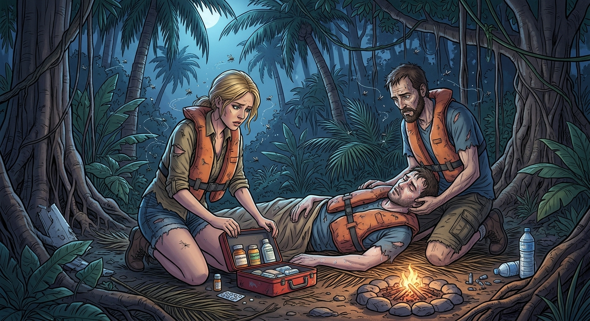
Have you got the first aid kit?
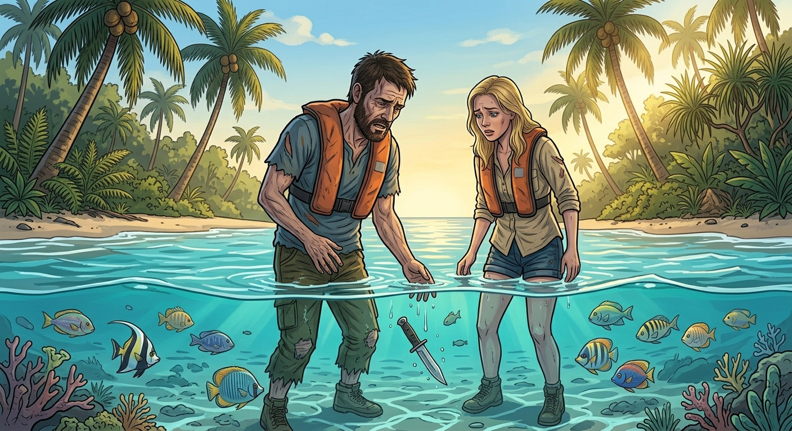
You try fishing. Do you have the knife?
Yes. You take it in turns to use it, but it's very difficult, and eventually one of you drops the knife under water. (Cross the knife off your list)
No. Fishing is hopeless. Give up! What would you like to do now?
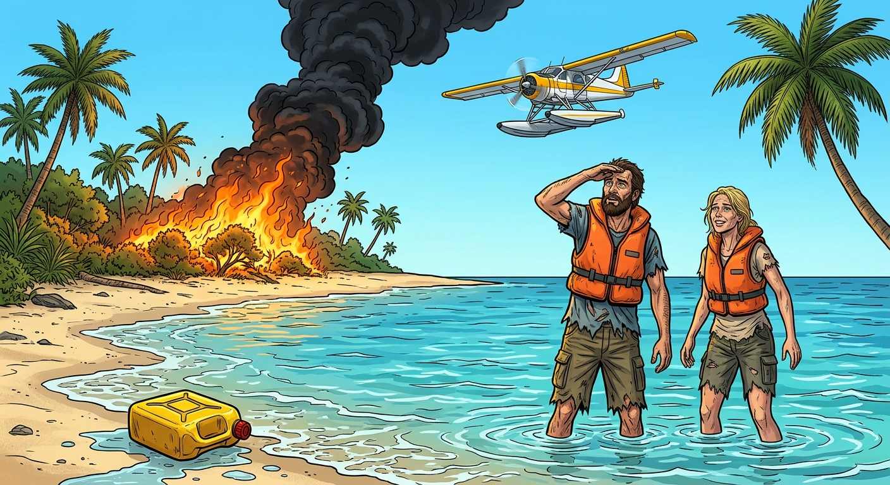
Thinking quickly, you pour the petrol over some bushes and small trees by the beach. Using the lighter, you set fire to the bushes.They go up in flames, and you have to run into the sea to escape the heat. Luckily, the pilot of the sea plane sees the fire and files back to investigate. He lands and finds you tired, weak, but alive.
You've survived. Congratulations! Saved by plane !
Whose idea was this? After 20 minutes you're very cold and it's impossible to sleep. You have to go back to the beach.
You get to the stream just in time to get some water. You drink for a while, and then you notice a big dead fish floating on the surface of the water. It doesn't smell too bad, and one of you is starting to feel dizzy from hunger. What do you do?
You can't open the coconuts. You are very hungry and thirsty. Have you got food with you?
You find it really difficult to make a raft without an axe. You have to split up to look for good wood for the raft.
After one hour, you notice that somebody is missing. You go looking for him/her, but two hours later, you haven't found him/her and the raft isn't finished. You have lost him/her. How many of you are left? You finish the raft, and hope that it is strong enough.
By now you are extremely hungry and thirsty. What do you do now?
Another two hours pass and it's starting to get dark. You're beginning to give up hope. Suddenly, from the south, you see a small ship in the distance. You light the bonfire on the top of the hill. It takes some time, but it shows up well in the night sky. The boat starts to move towards the island. They've seen you. I hour later, you've been rescued by the crew of a ship from New Zealand.
You've survived. congratulations! Saved by boat !
After watching the bird for ten minutes, you notice it's eating the roots from a green ground plant. You pull up one or two of these plants, and the roots look like potatoes. You are so hungry that you have to eat them. Luckily, they are tasty and not poisonous. You feel much better and relax for a while in the sun.
Unfortunately, not having any petrol, you can't start a fire quickly enough to attract the attention of the pilot. So you run out into the water, waving your arms and shooting. The pilot doesn't see you, and the plane disapears towards the horizon.
You spend another terrible night on the beach. The next morning, you are woken up by the sound of a motorboat. Local fishermen are arriving on the island. You jump up for joy, only to notice that one member of your party has not survived the night.
Other members of your party have all survived. Congratulations! Saved by boat !
You get to the top of the hill. You wait up there for two hours and start to feel tired. What do you do?
You cook the fish well ans eat it.
Ten minutes later, you all begin to feel a bit sick. Fortunately, it's nothing serious, perhaps not enough food. You rest for another half hour and feel much better and stronger.
The day passes as you wait on the beach. Too tired to look for food, you stay there, hoping to be saved.
Suddenly, just as it's getting darker you hear the sound of a small sea plane passing overhead. Quick, you need to do something. Have you got the petrol?
You get to the mango forest.
Unfortunately, the mangoes aren't in season, and you can't find any fruit.
Then suddenly, you see a big bird looking for food on the ground.